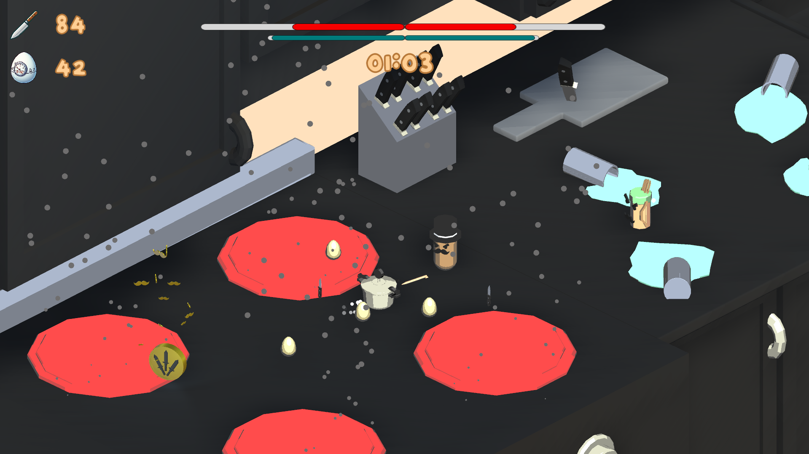

20:09
Well I never would have thought I would be typing my own posts to a personal website. Or to even have a personal website at all. Frankly I believed those computer science lessons during college on "website scripting" were a waste of my time. I would have much rather did some "real" coding and did something cool like make some "real" games. Well it seems the scripting came in handy and I ended up doing that "real" coding for "real" games as a career. Or soon enough atleast.
I am currently a university student studying Games Design and Development. At a healthy 18 years of age and 1 year completed in my first step as a game developer, everything just became that much more real. Being a game developer was something I had always dreamt of, but never believed to be something I would pursue. 12-year-old me would be absolutely infatuated with his future choices and chosen path.
Compiling one's thoughts is a great method in collecting every little detail required in understanding your own thought process. Posting them onto a public page is a recent innovation, and it has been done by a myriad of individuals since the dawn of the world wide web. And without a doubt, it amazes me every single time I end up on some random fellow's page, breaking down concepts and personal thoughts based on a topic I had absolutely no interest in only 5 minutes ago. And somehow I find myself obsessed over the same topic, digging myself deep into this newly introduced rabbit hole
My page will certainly contain plenty of rambling on whatever interests me at the moment. And hopefully I will document it all for my own interest. I already have a habit of journaling. Surely this could not be much different? Hopefully this doesn't sound as cheesy as it does in my head but, I hope this little webpage of mine can become the home for all my thoughts and interests into this ever expanding world we all reside in. And with this, I leave a quote:
“I judge you unfortunate because you have never lived through misfortune. You have passed through life without an opponent—no one can ever know what you are capable of, not even you.” – Seneca